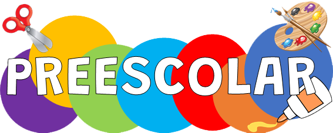
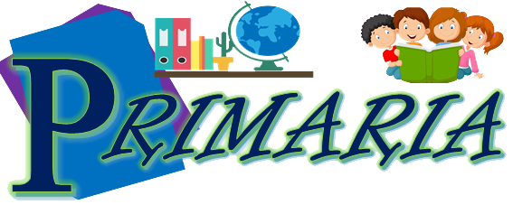

Niveles educativos

PREESCOLAR
En esta sección encontrará toda la información sobre los temas, materiales y herramientas tecnologicas que se utilizaran en los grados de PREESCOLAR.
Leer más

PRIMARIA
En esta sección encontrará toda la información sobre los temas, materiales y herramientas tecnologicas que se utilizaran en los grados de PRIMARIA.
Leer másSECUNDARIA
En esta sección encontrará toda la información sobre los temas, materiales y herramientas tecnologicas que se utilizaran en los grados de SECUNDARIA.
Leer más